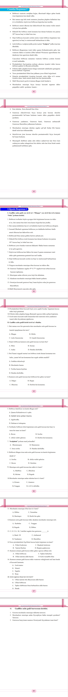
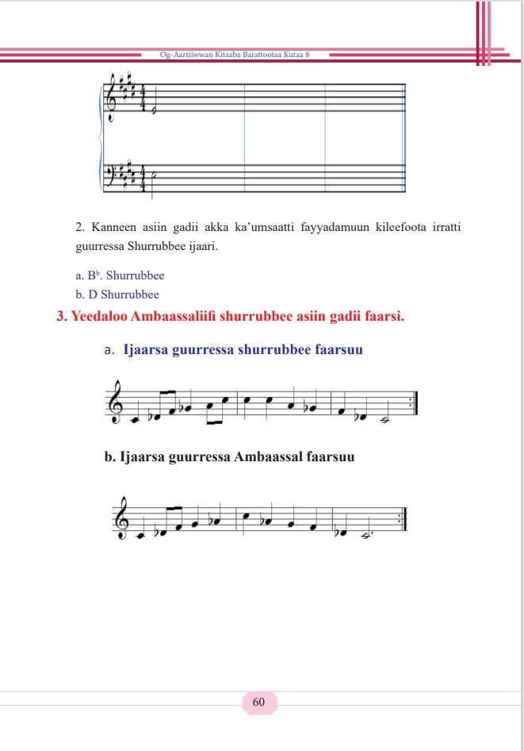

Qabiyyee .................................................................................. Fuula
BOQONNAA 1: Hubannoo Artistawaa ............................................................................1
1.Hubannoo Og-aartiiwwanii .......................................................................................1
1.1 Gaheefi Faayidaa Caacculee Bobbocaa .................................................................2
1.2 Muuziqaafi meeshaalee muuziqaa Itiyoophiyaa ..... ............................................14
1.3. Caacculee pirodaakshinii Og-tiyaatiraafi Og-fiilmii ............................. .............33
BOQONNAA 2: Dandeettii Kalaqaa ............................................................................. 49
2.1. Solfeejiyoo guurressa muuziqaa Itiyoophiyaan ...................................................50
2.1. Solfeejiyoo guurressa muuziqaa Itiyoophiyaan ...................................................50
2.3. Pirodaakshinii Og-tiyaatiraafi Og-fiilmii (kalaquu,
seenaa gabaabaa
barreesssuufi qeequu) ......................................................................66
2.4. Hojii Maxxansaafi Bobboca ............................... ................................................76
BOQONNAA 3: Haala Qabatamaa Seenaa Fi Aadaa.......................................................116
3.1 Seenaafi Aadaa Og- aartiiwwaniin.................................................... .....................116
3.2. Bobbocaa (Siidaa) fi Seenaa hojiiwwan harkaa bara durii .... ...............................124
3.3. Dur durii bifa Og-Tiyaatiraafi Og-Fiilmiin dhiyeessuu ....... .....................................133
BOQONNAA 4: Hawwannaa Og-aartiiwwanii......................................................... .......140
4.1. Faayidaalee Hojii Og-Aartiiwwanii Gochaan Agarsiisuu .....................................141
4.2 Og-aartii gochaan agarsiifaman wal bira qabanii wal madaalchisuu......................142
4.3. Ergaa Mallattoolee Siidaafi Ogummaa Harkaa Durii ............................................147
BOQONNAA 5: Hidhata Og-aartiiwwanii ........................................................................ 161
5.1. Og-aartiiwwan gosa barnoota biroo waliin walitti hidhuu .................................... 161
5.2. Og- Tiyaatira dhimmoota garaagaraa waliin walitti hidhuu....................................166
-iii-
BOQONNAA -1-
Hubannoo Artistawaa
1.Hubannoo Og-aartiiwwanii
Bu’aawwan Barannoo Boqonnichaa:
Xumura Barannoo Boqonnaa kanaa Booda:
● Hiikaafi maalummaa bobbocaa nihubatta.
● Akaakuu caacculee bobbocaa adda nibaasta.
● Faayidaa caacculeen bobbocaa qaban nibaratta.
● Akaakuuwwan muuziqaa Itiyoophiyaa, adda ni baafatta.
● Gosoota meeshaalee muuziqaa Itiyoophiyaa nibeekta.
● Amaloota Gurreessaafi shubbisaa nihubatta.
● Caacculee pirodaakshinii Og-tiyaatiraa ni tarreessita.
● Gahee ibsaafi uffanni og-tiyaatira keessatti qabu ni ibsita.
Seensa
Bobbocni tooftaa hojiin og-argaa ittiin hojjetamu ta’ee, ilmi namaa bara durii
irraa eegalee wantoota naannoo isaatti argamu irraa bocaafi soofaa kan turedha.
Ilmi namaa osoo akka ammaa kana qaroomaan yookiin guddina tekinoloojiitiin
hin guddatiin dura jiruuf jireenya isaa guyyaa guyyaa ittiin fooyyeffachuufi
mijataa taasifachuuf jecha wantoota garaagaraatti dhimma bahaa akka ture
nibeekama. Guddinni ogummaa bobbocaas isa kana waliin kan wal qabatudha.
Kutaa torba keessatti amaloota muuziqaafi shubbisa aadaa, Solfeejiyyoofi
gurreessaa biyyaa keenya, Seenaa muuziqaa Oromoo, weellistootaaf
1
shubbistoota angafoota biyya keenyaa, akkasumas meeshaalee muuziqaa aadaa
muuziqaafi barnoonni biroo hariiroo isaan waliin qaban barattee jirta. kutaa kana
keessaatti immoo Muuziqaa fi meeshaalee aadaa, muuziqaa Itiyoophiyaa
Guurreessaafi shubbisa, Soolfeejoo, guurressa muuziqaa Itiyoophiyaafi
aadaan roga muuziqaan maal akka ta’e nibaratta. Kutaa darban keessatti
maalummaa tiyaatiraa, akkaataa jalqabbii tiyaatiraa, guddina tiyaatiraafi
garaagarummaa tiyaatiraafi diraamaa addaan baastee hubattee jirta. Kuta kana
keessatti adeemsa pirodaakshinii Og-tiyaatiraafi Og-fiilmii kan barattu ta’a.
1.1 Gaheefi Faayidaa Caacculee Bobbocaa
Ga’umsa barachuu yoo xiqqaate barattoonni gonfachuu qaban:
● Xumura barnoota mata duree kanaatti:
● Hiika bobbocaa ni ibsita.
● Akaakuuwwan caacculee bobbocaa nitarreessita.
● Faayidaa caacculeen bobbocaa qaban nihimta.
1.1.1. Hiikaafi Amaloota Bobbocaa
Gocha 1
Biyyee suphee yookiin kaartoniifi kan kana fakkaatan irraa bobboca namaa,
bineensotaa, konkolaataa, manaafi kanneen biroo hojjettanii yookiin ijaartanii
ittiin taphattanii beektuu? Yoo hojjattanii kan beektan ta’e akkamittiifi maal
irraa akka hojjattan hiriyyoota keessan wajjiin irratti mari’adha.
Bobbocni tooftaalee hojiin og-argaa ittiin hojjetaman keessaa isa tokko ta’ee,
ilmi namaa bara durii irraa kaasee haala jiruuf jireenya isaa hawwataafi mijataa
taasisuuf wantoota sasalphaa naannoo isaatti argachuu danda’u irraa bocaafi
hojjechaa kan turedha. Ilmi namaa erga lafa irratti uumamee jiraachuu jalqabee
kallattiinis haa ta’u al-kallattiin hojiiwwan bobbocaa hojjechaa tureera.
Bara durii keessa yeroo ilmi namaa hin qaroomnetti/ meeshaalee garaagaraa
2
akka ammaa tolfatee itti gargaaramuu osoo hin eegaliin/ wantoota sasalphaa
naannootti argaman bocuun, soofuun itti gargaaramaa kan turanidha.
Fakkenyaaf, dhagaa, lafeewwan bineensotaa, gaanfa bineensotaa, mukaafi kan
kana fakkaatan soofee qara baasuun akka eeboottiifi aalbeetti itti tajaajilameera.
Gabaabummatti seenaafi dhufaatii ogummaa bobbocaa yoo dudduuba deebinee
ilaalle umurii dheeraa kan lakkoofsiseefi ilmi namaa bara durii irraa eegalee
hojjetee itti tajaajilamuufis ta’e, akkasumas yaada, miira, hawwii, seenaa, aadaa,
duudhaa, ergaa amantaa, gadda, gammachuufi kan kana fakkaatan ittiin ibsachaa
turuufi ibsachaa jirachuu isaa seenaan ragaa niba’a. kanaaf, bobbocaafi ilma
namaa gidduu hariiroo jabaatu jira.
Hiikniifi ibsi bobboca irratti kennamu kan duraan beekamu irra jaarraa 20ffaa keessa
baay’ee babal’atee ture. Guddina tekinoloojii yookiin meeshaalee haaraafi
tooftaa garaagaraa bobbocni ittiin hojjetamu irratti hundaa’uun yaanni/ ibsi
bobbocaaf kennamaa ture kan duraan beekamu yaada xiqqaafi murtaa’oo ture
hafee, yaanni bal’aan waa’ee hiikaafi tooftaa bobbocni ittiin hojjetamu irratti
kennamuu eegale. Bara durii keessa osoo ilmi namaa tekinoloojiin hin guddatiin
dura hojiiwwan bobbocaa wantoota sasalphaa ta’aniifi haala salphaa ta’een
hojjechaa turaniiru. Hojii bobbocaas hedduminaan barteen yookiin shaakalaan
kan hojjechaa turani malee, waa’eefi akkaataa hojiin bobbocaa ittiin dalagamu
sirriitti qo’atanii hojjechaa hin turre. Namoonni aadaan yookiin barteen hojii
bobbocaa hojjechaa turan hanga jaarraa 20ffaa tti bobboca akkaataa afuriin ibsaa/
hiikaa turan. Isaanis:
1ffaa Bobbocni hojii foormii og-argaa ta’ee, hojjaa, dheerinaafi dalgee qofa akka
qabutti hiiku.
2ffaa Bobbocni fakkaattii /Bakka bu’aa/ uumamaati jedhu. Garuu hojiiwwan
bobbocaa hundi guutummaa guutuutti bakka bu’aa uumamaa (wanta fakkoo
ta’e) qofa osoo hin taane, kan fakkoo/fakkaattii uumamaa hin taanellee ta’uu
nidanda’a. Bakka bu’aa yeroo jedhu salphaatti kan hubatamuu danda’u
jechuudha. Fakkoo kan hin taane immoo qaama uumamaan wanti tokko qabu
guutummaa guutuutti yookiin tasumaa kan hin mul’isne, akkasumas immoo
ergaa wanti sun dabarsu salphaatti kan hin hubatamne jechuudha.
3
3ffaa Bobbocni foormii hojii og-argaa jajjaboo ta’ee mul’atudha jedhu.
Bobbocni qaama jajjaboo ta’e kan qabudha yeroo jedhu, bakka duwwaa wanta
hojjetamu gidduutti yookiin naannoo wanta hojjetamuutti hafuuf xiyyeeffannoon
hin kennamu. Akka waan hin barbaachifneetti ilaalama. Akkasumas sochii
qaama wantootaa hin mul’isu. Hojii bobbocaa keessatti immoo sochiin
(miira wanta bobboca hojjatamee kan agarsiisu) baay’ee murteessaafi
barbaachisaa kan ta’edha. Wanti hojjetamu tokko sochii hin qabu yoo ta’e,
hawwatummaa hojichaa gad buusuu danda’a.
4ffaa Namoonni ogummaa bobbocaa hojjetan mala lama qofatti gargaaramaa
turan. Malleen lamaan ittiin hojjechaa turan kun immoo mala soofuufi bocuu
ture. Sababni isaan malleen kana lamaan qofa gargaaramaniif, bara durii
wantoonni ilmi namaa hojii bobbocaa hojjechuuf dhimma itti bahaa turan
wantoota soofamuu danda’an kanneen akka mukaa, dhagaa, lafee bineensotaafi
kan kana fakkaatan yommuu ta’u, wantoonni hojii bocuuf oolan immoo kan
akka biyyee supheeti. Haa ta’u malee, yeroo ammaa kana garuu hojiin bobbocaa
wantootaafi akkaataa ittiin hojjetaman irratti hundaa’uun haala garaagaraa
afuriin hojjetamu. Isaanis:
A. Soofuufi Bocuu
C. Baksuufi walitti qabsiisu
B. Bocuu
D. Tolchuudha.
A. Soofuufi Bocuu
Gocha 2
Naannoo keetti namoonni yeroo muka irraa wantoota akka waanjoo, mooyyee,
teessoofi kan kana fakkaatan soofaniifi bocan argitee beektaa? Yoo argitee kan
beektu ta’e akkaataa itti soofaniifi bocan dareef ibsi.
Ogummaa soofuu jechuun tooftaa ogummaa bobbocaa wantoota akka dhagaa,
muka, ilka arbaa, lafeefi kan kana fakkaatan irraa ittiin hojjetamu keessaa isa
tokko ta’ee, meeshaalee garaagaraa gargaaramuun mala itti foormiin ta’e tokko
kutamee yookiin soofamee itti hojjetamudha.
4
Fakkii 1.1 Fakkii bobboca ogummaa soofuunii fi bocuun hojjatame agarsiisu
B. Sibiila walitti qabsiisuu/Welding
Ogummaan Sibiila walitti qabsiisuu tooftaa haaraa hojiin bobbocaa jaarraa
20ffaa keessa ittiin hojjetamuu eegale ta’ee, tooftaa bobbocni wantoota wal irratti
ijaaraa adeemuun ittiin hojjetamudha. Wantoonni wal irratti ijaaramaa
adeemuun hojjetaman, wantoota haala salphaa ta’een naannootti argamuu
danda’anidha. Fakkeenyaaf: Sibiila daanda’e.
Fakkii 1. 2 Fakkii bobboca ogummaa Sibiila walitti qabsiisuun hojjetame agarsiisu
C. Bocuu
Bocuu jechuun adeemsa artistiin foormii ta’e tokko ijaaruuf wantoota bocni irraa
hojjatamu kanneen akka biyyee suphee, gagaa dammaafi kan kana fakkaatan
gargaaramuun itti hojjetudha.
5
Fakkii 1. 3 Fakkii bobboca ogummaa bocuun biyyee suphee irraa hojjetame agarsiisu
D. Omishuu/casting
Tooftaan ogummaa tolchuu tooftaa bobbocni jaarraa 20ffaa booda bal’inaan ittiin
hojjetamuu eegaledha. Hojii bobbocaa yookiin mooldii hojjetamee qophaa’e
tokkotti wantoota dhangala’oo kanneen akka sibiila baqee, pilaastikii,
simmintoo, jeessoofi kan kana fakkaatan itti naquun kan hojjetamu jechuudha.
Tooftaan kun tartiiba hojiin bobbocaa tokko biyyee suphee yookiin gagaa
dammaa ittiin hojjetame irraa gara sibiilaatti yookiin simmintootti ittiin
jijjiiramudha.
Fakkii 1. 4 a. Simiintoo fayyadamuun bobboca bilookeettaa omishame kan agarsiisu
Fakkii 1. 4 b. Jeessoofi Simiintoo fayyadamuun bobboca omishame kan agarsiisu
6
Fakkii 1. 4 c. ogummaa bobbocaa sibiila walitti baqsuun omishame agarsiisu
Hiika bobbocaa akka jaarraa amma keessa jirruutti yoo hiikne isa jaarraa 20ffaa
waliin hanga ta’e tokko garaagarummaa niqabaata. Kunis, bobboca /sculpture/
jechuun jecha Laatinii “Sculptura” jedhu irraa kan dhufe yoo ta’u, hiikni isaas:
●Dhommoqsuu
●Mummuruufi
●Irraa soofuudha.
Bobbocni dameewwan Og-argaa keessaa tokko yoo ta’u, hojjaa, dalgeefi
dheerina qabudha. Kun immoo tooftaalee hojiin og-argaa ittiin hojjetaman
kanneen akka diba halluu, wixinee, maxxansaafi kan kana fakkaatan warra
qaama diriiraa ta’an irraa addaan baasuuf gargaara. Bobbocni qaama jajjaboo
kan tuttuqamuufi kallattii maraan itti naanna’amee ilaalamuu danda’u kan
qabudha.
Bobbocni akka diba halluu yookiin wixinee ijaan qofa kan ilaalamu osoo hin
taane, dhugummaa wanti tokko qaama fiizikaalawaatiin qabu, kan wantoota
fakkoo ta’aniitiin (diba halluufi wixineen) agarsiifamuu hin dandeenye kan
agarsiisuu danda’udha. Bobbocni foormii qabatamaafi mul’ataa ta’edha.
Namoonni uumamaan qaroo dhabeeyyii ta’anillee hanga ta’e tokko hojii
bobbocaa raajeffachuus ta’e, hojjechuu nidanda’udha
7
1.1.2. Caacculee Bobbocaa
Marii
Caacculee bobbocaa jechuun maal jechuudha? Caacculee bobbocaa kanneen
jedhaman maalfaa akka ta’an garee gareen irratti mari’achuun dhuma irratti
dareef gabaasaa.
Caacculeen bobbocaa uumamuu wantoota bobboca yookiin foormiif bu’uura
ta’u. Mana tokko ijaaruuf dhagaa yookiin dhoqqee, muka, sibiila, simmintoo,
cirracha, qorqoorroo yookiin citaafi kan kana fakkaatan barbaachisaafi mutreessaa ta’uu qofa osoo hin taane wantoota kana malee mana ijaaruun akkuma hin
danda’amne, caacculee bobbocaa malee hojii bobbocaa yookiin foormi ta’e tokko hojjechuun hin yaadamu. Hojiiwwan bobbocaa dhimma amantaaf, miidhaginaaf, yaadannoof, galii argamsiisuuf, seenaa ibsuufii kan kana fakkaataniif hojjetaman hundi bu’aa caacculee bobbocaati. Caacculeen bobbocaa kanneen asiin
gadiiti.Isaanis:
● Qabee/Hanga
● Bakka
● Sarara
● Qaama Dirraa
● Boca
● Vaaliyuu
● Lallaafinaa fi quqquqina dirra wantootati.
● Halluudha
Caacculee bobbocaa asiin oliitti tarreeffaman keessaa isaan bu’uura kan ta’an
bakkaafi hangadha
8
1. Qabee fi Hanga
Bobbocni dheerina,dalgee fi hojjaa waan qabuuf qabee qabachuu danda’a. Qaama bobbocaafi wantoota jajjaboo dirra sana keessatti haammataman agarsiisa.
Bobbocni hunduu wantoota hanga qabaniifi harkaan tuttuqamuu danda’an kamirraayyuu kan uumamudha. Daangaa of danda’aafi guutummaa guutuutti bakkaan kan marfamedha
2. Bakka
Bakki gidduu qaama bobbocaatti yookiin naannaawaa bobbocaatti marsee kan
argamudha. kana jechuun bakka duwwaa naannawaa bobbocaatti argamuu fi
iddoo bobboocaan qabamu ta’ee, handaara/qarqara bobbocaa kan ibsudha.
Fakkii 1. 5 Fakkii bakkaa agarsiisu
3. Sarara
Bobboca keessatti sarara jechuun qarqara/
handaara foormiifi qaama dirra waltuquuti.
Wixinee keessatti sararri qubeessaa, cileefi kan
kana fakkaataniin hojjetama. Diba halluu
keessatti immoo qubeessaa yookiin dibduu
halluu cuuphuun hojjetamuu nidanda’a.
Bobboca keessatti garuu wantoota qaqal’aa
kanneen akka: shiboo, haada/finyoo, mukaafi
kan kana fakkaatan ta’uu danda’a.
Fakkii 1. 6 Fakkii boca sararaan hojjatame
9
Bobboca keessatti qaama dirraa yeroo jedhamu qaama ala bobbocaa irratti
kan argamuudha. Kunis hojii bobbocaa hojjetamu keessatti bakka sirriitti gadi
fageenyaan kan hojjetamuufi wanta hojjatamuu barbaadamee bakka bu’uu kan
danda’uudha.
5. Boca
Bocni garaagaraa yommuu walitti qindaa’u foormii uuma. Gurmuun foormii
immoo bobboca kennuu danda’a. Bobboca keessatti boca bakka lamatti qoodnee
ilaaluu nidandeenya. Isaanis: Boca pozatiiviifi Boca negatiiviidha
A. Boca Pozatiivii
Hanga waliigalaa bobboca hojjetamu gidduutti argamuuti. Bakka qaama
tokkoon qabamu/ guutuuti.
B. Boca Negatiivii
Bakka duwwaa qaama tokkoon hin qabamne, kan bilisa ta’ee hafu jechuudha.
Hojii foormii yookiin bobbocaa keessatti bocni bakka negatiivii mul’atu
jijjiirama iddoo dhaabbii nama bobbocicha daawwatu/ ilaalu waliin kan
jijjiiramudha. Sababni isaas bobbocni yookiin foormiin qaama fiizikaalaa kan
qabuufi itti naanna’amee ilaalamuu kan danda’u waan ta’eef, yeroo iddoo
dhaabbii keenyaa jijjiirrannu bocni mul’atus yoo ilaallu, kallattii ilaalchaa
keenyaa waliin jijjiirama.
Fakkii 1. 7a. Fakkii boca pozatiivii kallattii garagaratiin yommuu ilaallu agarsiisu
10
Fakkii 1.7b. Fakkii boca negatiivii kallattii garagaratiin yommuu ilaallu agarsiisu
6. Ifummaa yookiin dimimmisummaa
Bobboca keessatti ifummaa yookiin dimimmisummaa hanga ifaa yookiin
gaaddisaa dirra foormichaati. Hanga baay’ina ifaa dirra wanta hojjatamee irraa
balaqqaa’uuti. kunis dirra foormii hojichaa/ bobboca tokkoo yoo halluu dibame
jijjiiramuu kan danda’udha
7. Lallaafinaafi quqquuqina dirra wantootaa
Lallaafinni fi quqquuqinni qaama yookiin qulqullina dirra wantootaa kan
jedhaman haala uumamaan fi nam-tolcheetiin kan argamanidha. Qulqullina,
Lallaafina, Halluufi kan kana fakkaataniin hojii bobboca tokkoo sababa dhiibbaa
aduu, roobaa, qilleensaatiin jijjiiramuun dhufuu danda’a.
Fakkii 1. 8. Fakkii lallaafinaafi quqquuqina dirra wantoota agarsiisu
11
8. Halluu
Wantoonni bobbocni irraa hojjetaman halluu uumamaa kan ofii isaanii niqabu.
Yeroo bobboca hojjennu halluu dhugaa wantichi irraa hojjetame Bifa uumamaa
akkuma jirutti dibuun gaarii miti. Fakkeenyaaf, bobboca abbaa gadaa hojjenna
yoo ta’e, huccuu aadaa, hidhannoofi wanta abbaan gadaa qabatu hunda erga
fakkeessinee hojjenneen booda akkaataa halluu huccuu aadaa, hidhannoofi
qabannaa isaatti kan fakkeessinee dibnu yoo ta’e, sadarkaa hojii keenyaa gadi
buusa. Kanaaf, bobboca wantoota garaagaraatti gargaaramnee yeroo hojjennu
akkaataa fakkaattii bobboca wantoota hojjetamaniin halluu dibuun barbaachisaa
miti. yoo halluu dibuun kan barbaachisu ta’e halluu wal fakkaataa ta’uu qaba
malee, akka hojii diba halluu, halluu garaagaraa gargaaramnee hojii bobbocaa
miidhagsuuf yaaluun barbaachisaa miti.
1.1.3. Meeshaalee Bobbocni Irraa Hojjetamu
Gocha 3
Meeshaalee bobbocni irraa hojjetamuu danda’u maal fa’a ?
Wantoonni hojjaa, dheerinaafi dalgee qabaatanii kallattii hundumaan itti
naanna’amanii ilaalamuu danda’an kamiyyuu hojii bobbocaa ittiin hojjechuuf
nigargaaru. kanaaf, bobbocni wantoota garaagaraa irraa hojjetamuu nidanda’a.
Isaanis:
● Dhagaa
● Sibiila
● Meetii
● Warqee
● Birrii
● Biyyoo suphee
● Gagaa dammaa
● Muka
● Pilaastikii
● Waraqaafi kan kana
fakkaatanidha
12

13
1.2 Muuziqaafi meeshaalee muuziqaa
Itiyoophiyaa, Guurressaafi shubbisa
Gaaffii hubannoo
Sirba tokko hojjechuuf yookiin qindeessuuf wantoonni ijoon barbaachisan maal
faadha?
1.2.1 Akaakuuwwan gurguddoo muuziqaa Itiyoophiyaa
Muuziqaan Itiyoophiyaa jaarraa hedduuf Aadaa Afoolaan dhalootaa dhalootatti
darbaa dhufee.Haalii qabatamaan yoomiifi akkamiiti akka eegale bifa
barreeffamaan jiraachuu baatuus sabaafi sablammiin Itiyoophiyaa keessa
jiraachaa turan muuziqaa dhimma garagaraaf maayii akka itti ba’aa turan
qorannon ni ibsa. Kana jechuun yeroo duulaa ittiin wal jajjabeessf, ittiin
aantummaafi jaalala qaban, sirna waqeffannaaf, miidhamaafi gadda ibsachuuf,
akkasumas seenaafi aadaa hawwaasichi qabu ittiin leellisuufi gabbisuuf
shorri muuziqaan taphatu olaanaa ture. Halli kun hamma illee bifa hammayya’aa
ta’een itti fufee hojiirra oolaa jira. Haalota olitti ibsaman kana akka ka’umsaatti
fudhachuun akaakuu muuziqaa akka asii gadiitti ibsuun ni danda’ama.
Isaanis:
1. Sirba Gadaa:
Sirbi gadaa yeroo sirni gadaa raawwatu kabajaafi haala
seera walduraa duuba ofii isaan kan sirbamuudha.
14
2. Sirba Ateetee:
Sirbi kun yeroo caamni hammaatu, yeroo Ateetee
facaafatan yeroo deessuun reebamtu yookiin dhaanamtuufi kan kana
fakkaatan kan dhiyaatuudha.
3. Sirba hawaasummaa:
Sirbi kun yeroo hawaasni jiruufi jireenya
isaa geggeeffatu kan sirbamuudha. Isaanis fakkeenyaaf yeroo cidhaa,
dhalootaa, ayyaanaa, du’aafi kan kana fakkaatan kan dhiyaatuudha.
4. Sirba Hojii:
Sirbootni kun kan yeroo hojii wal gargaaruun hojjetanii
kan dhiyaatuudha
Fakkeenyaaf:
• Yeroo midhaan haaman,
• Yeroo mana ijaarsaa,
• Yeroo miidhaan tumaafi hojiiwwan adda addaa waliin
raawwatan kan sirbaniidha.
5. Sirba Siyaasaa:
Sirbi kun kan namoonni siyaasa jiru mormuuf yookiin
deggeruuf itti gargaaramaniidha.
Faaruu:
Faaruun gosoota garagaraa qaabaatus yeroo baayyee manneen
amantaa keessatti, manneen barnootaa keessatti dhimma barnootaaf,
biyya ittiin faarsuuf, loon yeroo tiksaniifi dhimmoota garagraaf kan itti
fayyadamnuudha.
7. Geeerarsaaa
Geerarsi uummata Oromoo biratti baay’inaan kan beekamuufi haala adda ta’een kan taphatmuu dha. Geerarsi gootummaa yookiin
jajjabina nama tokkoo ibsuuf kan taphataniidha. Akka aadaa Oromootti geerarsi kan geeraramu namoota ga’eessotaan yoo ta’u innis sababa
tokkoon walqabsiisuun geerarama. Geerarsi irra caalatti kan geeraramu
dirree waraanaatti loltoota jajjabeessuuf, bineensa mirga qabu yoo ajjeesan
gootummaa ofii sana ibsuuf, sanyii ofii faarsuu fi kan kana fakkaataniidha.
8. Sirboota Hammayyaa:
sirboota bifa hammayawaa ta’een dhimmota
garagaraa irratti fakkeenyaf bu’aa daldalaaf, bashannanaafi kkf…
meeshaa muuziqaan qindaa’anii dhiyaataniidha.
15
1.2.2 Akaakuuwwan meeshaalee muuziqaa Itiyoophiyaa
Meeshaaleen Muuziqaa aadaa addunyaarratti erga hojiirra ooluu eegalanii barri
murtaa’aa ta’e beekkamuu baatuyyuu waggoota dheeraa lakkoofsisaniiru.
Akkuma kana biyya keenya keessatti meeshaaleen muuziqaa aadaa yeroo
dheeraaf faayidaa irra oolaa turaniifi jiran lakkoofsaan hedduudha.
Meeshaalee muuziqaa biyya keenya keessatti argaman iddoo gurguddoo sadiitti
qoodamu. Isaanis:
A. Kan rukuttaa (rukutamuun kan sagalee baasan)
B. Kan hafuuraa (afuufamanii kan sagalee baasan)
C. Kan ribuu (walitti riguufi dhooftuudhaan dhahaamanii kan sagalee
baasan)
A. Meeshaalee Muuziqaa Rukuttaa
Meeshaalee muuziqaa rukuttaa kan jedhaman bifaafi boca garaagaraa kan
qabaniifi dhimma adda addaatiif yeroo garaagaraatti kan itti fayyadamaniidha.
Kana jechuun yeroo ayyaana waggaa, yeroo cidhaa, yeroo waaqefannaafi kkf
itti fayyadamna. Meeshaaleen muuziqaa kunniin sagalee qal’aafi furdaa bifa
baasuu danda’aniin kan tolfamaniidha. Isaan keessaa muraasa isaanii haa ilaallu.
Dibbee:
Dibbeen biyya keenyaa gosa adda addaatu jira. Isaanis waa himtuu (nagaarita,)
dibbee, Ataamoofi kan kana fakkaatan jedhamuun beekamu. Kan hojjetamanis
gogaafi muka, gogaafi Sibiila, gogaafi Supheefi kkf irraati.
16
1.Waahimtuu
Waahimtuun gosa dibbee ta’ee baay’ee guddaa ta’uusaa irraan kan ka’e namni
tokko olfuudhuu hin danda’u. Iddoo tokko tokkottimmoo nagaariiti
jedhameellee beekkama.tajaajillisaas moototni ummata bulchaniif ergaa adda
addaa fakkeenyaaf: Ummata woraanaaf qopheessuu, gibira akka kafalan
yaadachiisuu, wolgayii akka dhufan fa’a yaadachiisuu yoo barbaadan dibbee
guddaa waahimtuu jennu kana harretti feesisanii rukutudhaan ergaa barbaadan
dabarfachuuf itti fayyadaaa turan.
Dibbeen waahimtuu kun meeshaalee muuziqaa aadaa kan rukkuttaa keessaa
isa tokko. Meeshaan muuziqaa kun irra caalaa gogaa yookin kaldhee kormaa,
muka guddaa keessi isa soofame/gabatee irraa hojjetama. Akkasumas
ribuun ykn funyoon ittiin dhifamu/jabaatee hodhamu qaba. Dibbeen kun kan
rukkutamu harkaan osoo hin ta’in ulee rukuttaa kan jedhamu muka gaggabaabaa
lama kan tajaajiluma kanaaf qophaa’eenidha.
2.Dibbee
Dibbeen meeshaa muuziqaa kan aadaa ta’ee akkuma gubbaarratti meeshaa
muuziqaa waahimtuu jenneen wolitti dhiyeenya kan qabudha. Haata’uu malee
dibbeen hangaan xiqqoodha waan taateef gogaa re’eetiif gabatee xiqqoo irraa
17
hojjatmti. Yeroo baay’ee kan itti tajaajilamanis qophiilee akka cidhaa, ayyaanota
amantaa adda addaa irratti, muka xixiqqaa lamaan yookiin ammoo harkumaan
taphachuudhan/rukutuudhaan muuziqaa barbaadame san ittiin daabaalanii/
miidhagsanii sirbu.
3.Ataamoo
Ataamoon yeroo muuziqaan aadaa taphatamu tajaajiluudhaan beekkama. Ataamoon waan xiqqaa ta’eef harkatti yookiin bobaa jalatti qabatanii rukutuudhaan
taphatama. Ataamoon kan rukutamu harkaan yookiin mukaan yoo ta’u haalli
rukuttaa isaa akkaataa barbaachisummaa isaa kan yeroosanaa/haalichaa irratti
hundaa’a. Taphni isaa amantaadhaan kan wal hin qabanneefi sirbootaafi shubbisa aadaa kan ta’an miidhaksuuf gargaara. Fakkeenyaaf, sirboota qaammee
ijoolleen shamarranii taphatan, yeroo cidhaafi kkf dha.
18
4.Dibbee xiqqoo
Dibbee xiqqoo naannoo wallaggaatti sirba yeroo cidhaa, ayyaanaafi kkf itti
fayyadamu. Isas shamarrantu harkatti qabatee rukutaa sirba/shubbisa.
5. Buunshoo
Buunshoon meeshaa muuziqaa kan aadaa yoo ta’u, gaanfa horii guddaa keessa
soqanii/hoofanii gubbaasaammoo gogaa re’ee itti hodhanii erga gogee booda
ulee xiqqoodhaan rurrukutamee kan sagalee baasudha. Meeshaa muuziqaa Kanaan kanneen yeroo dheeraaf fayyadamaa turan shamarran Arsiif Baalee ta’uu
odeefffanooleen kan ibsan yoota’u kan itti tajaajilamanis yeroo cidhaatti ittiin
sirbu.
19
6. Kabalaa
Meeshaan kunis meeshaalee rukuttaa keessaa tokko ta’ee gosa dibbee irraa
addadha. Isas godinaalee tokko tokko fakkeenyaaf Arsii, Baaleefi Boorana
keessatti baay’inaan itti fayyadamu. Yeroo baayyee kan taphatan shamarran
ta’anii yeroo cidhaa, ayyaana waggaa, yeroo muudaafi kkf itti fayyadamu.
Meeshaan kun muka irra sofamee kan hojjatamuufi walitti dhahudhaan kan ittiin
taphatamudha.
20
7. Marakaashaa
Marakashni saba Oromoo biratti buqqee/ullee gogsanii keessa isaatti takii/
dhagaa xixiqqaa/cirracha/boqqolloo goggoges itti naquudhaan yommuu asii
achi raasan/sosochoosan/urgufan,
sagalee rukuttaa muuziqichaa/ sirbichaa wajjiin deemu kan argannu ta’a.
B. Meeshaalee Muuziqaa Hafuuraa
Meeshaaleen kun naannoo keenya keessatti umurii yeroo dheeraa qabu.
Hawaasni biyya keenyaa yeroo durii jalqabee meeshaalee kana bu’aa bahii
jirreenya isaa keessatti yeroo adda addaa itti fayyadamaa tureera; ammas itti
fayyadamaa jira.
Fkn: yeroo cidhaa, yeroo jalabultii garaagaraa ittiin jaalalaaf wal waamuuf,
yeroo walgahii, yeroo namni du’uu yeroo horii tiksanfi kkf fayyadamaa tureera;
ammas itti fayyadamaa jira. Meeshaalee kanniin keessaa muraasa isaanii asii
gaditti ilaalla.
1.Ulullee
Meeshaan kun jiruu hawaasa biyya keenyaa wajjiin kan walqabateedha.Yeroo
baay’ee dargaggoonni biyya keenyaa yeroo loon tiksan, yeroo midhaan eegan
galgala yeroo maatiin walga’u wal bashannansiisu. Jaalallee ofii ittiin
21
hawwachuufi kkf itti fayyadamu. Ululleen meeshaalee Muuziqaa hafuuraan
afuufamee sagalee baasu ta’ee uraa afur kan qabuufi sagalee shan kan
baasuudha.
Guurressoota beekamoo ta’an kan akka Yaadannoo, Baatii, Shurrubbeefi
Ambaassal ittiin taphachuun ni danda’ama. yeroo qopheessiinu waantoonni
irraa tolfaman shomboqqoo,sibiila, pilaastikaafi kkf dha.
2. Faaggaa
Faaggaan yeroo durii jalqabee uummataa wajjin kan tureedha. Faaggaan
afuuraan afuufamee kan sagalee baasu yoo ta’u naannoo keenya keessatti
dhimma garagaraaf itti fayyadamu.
Fakkeenyaaf yeroo midhaan eegan bineensota ittiin sodaachisuuf, yeroo
sirba jala bultii dhaqan, ittiin walwaamuuf,abidda ittiin afuuffachuufi kan kana
fakkaatan itti fayyadamaa turan. yeroo ammaa meeshaalee muuziqaa biyya
22
keenyaa keessaa badaa jiran keessaa isa tokkoodha. Faaggaan muka keessi isaa
banaa ta’e ,Sooyyoma, Leemmana muka jedhamu irraas ni hojjetama
3. Xurumbaa
Meeshaan kun Faaggaa irraa fooyya’ee kan dhufe yoo ta’u kan jalqabaaf
hojjetames buqqee (dabaaqula) irraa ture. Yeroo ammaa garuu siibiila irraa
hojjetama. Hawaasni biyya keenyaa yeroo cidhaa, haamaa, walgahii, yeroo
namoonni du’an ergaa ittiin dabarfachuuf itti fayyadamu.
23
4. Fiingee
Fiingeen meeshaa muuziqaa aadaa hafuuraa keessaa tokko ta’ee sagalee
tokko baasudhaan kan bekkamuu dha. Fiingeen kan hojjatamu muka keessi
isaa qaawwaa ta’ee gara jalaatiin kan bal’atuu ta’a. Fiingen gaafa loonii
ykn koopparii irraa hojjatama. Meeshaan muuziqaa kun yeroo qophiin addaa
jiru nagaaritiifi imbiltaa waliin tajaajila. Fakkenyaaf, mootiin biyyaa tokkoo
yookiin namni beekkamaan tokkoo kan dhufaa jiru ta’uu isaa agarsiisuufi
simannaa gochuuf fayyadamu.
24
1. Xiimboo
25
2. Kiraara
Kiraarri meeshaalee muuziqaa aadaa biyya keenyaa keessaa akkuma maasiinqoo
isa beekamaafi jaallatamaadha. kiraarri aadaadhaan ribuu shanii hanga ja’aa
qaba. Akkasumas boca garagaraafi dheerina garagaraa qaba. Yeroo taphaannus
bifa lamaan taphanna, tokko quba keenyaan ribuu isaa bubbutuun/ funaanuutiin/
lammaffaan immoo dhooftuu dalga irra butuutiin/ rukutuun/ taphatama. Kiraara
hojjechuuf kanneen nu barbaachisan muka, sa’anii golboo ykn gabatee
xiqqaa,mismaara gogaafi ribuudha.
26
3. Baganaa
Meeshaan kun Itiiyoophiyaa keessatti bara dheeraa kan lakkoofsiiseedha. Bocni
isaa kiraara waliin wal fakkaata. Qaamaan garuu kiraara irra kan dheeratuufi
ribuun isaa furdaa ta’e sagalee furdaa (beezi) kan baasuufi ribuu kudhan kan
qabuudha. Kan inni irraa hojjatamu muka, ribuufi mismaaraan.
27
1.2.3 Guurressaafi shubbisa
A. Amaloota guurressi biyya keenyaa qabu
Muuziqaa Itiyoophiyaa keessaa iskeeliiwwan muuziqaa garagaraa akka jiran
qorannoon yeroo garagaraatti taasifame ni mul’isa. Iskeeliwwan jiran
keessaa iskeeliin peentaatoonikii bal’inaan beekama. Iskeelii kana jalatti
guurressa beekamoo afurtu jiru. Isaanis:-
1. Guurressa Yaadannoo
2. Guurressa Baatii
3. Guurressa Ambaassaliifi
4. Guurressa Shurrubbee jedhamuun beekamu.
1. Guurressa Yaadannoo
Yaadannoon guurressa biyya keenyaa keessaa tokkofi kan sagalee shan
qabuudha. Innis yaadannoo meejariifi yaadannoo maayinarii jedhamee bakka
lamatti qoodama. Yaadannoo meejariin kan ballinaan beekamuufi itti
fayyadamamu ta’ee, akkaataan ijaarsa guurressa isaa sagaloota muuziqaa torban
jiran keessaa jalqaba irraa eegallee sagalee arfaffaafi torbaffaa keessaa baasuun/
hambisuun kan hafan shananiin kan taphatamuudha.
Akkasumas, yaadannoo maayinarii immoo sagalee afraffaafi torbaffaan akka
keessaa bahetti ta’ee, dabalataan sagalee sadaffaafi jaa’affaa tarkaanfii ½
hirrisuun/gara duubaatti deebisuun kan taphatamuudha.
28
1.3.1. Caacculee pirodaakshinii Og-tiyaatiraa
Og-tiyaatirrii tokko qophaa’ee waltajjiirratti dawwaattootaaf dhihaachuuf
adeemsa baay’ee keessa darba. Kana jechuun hojiin Og-tiyaatiraa yeroo
tokko keessatti kan xumuramu miti. Hojii gartuun hojjetamuufi yeroo
gaafatuudha.Caacculee piroodaakshinii og-tiyaatiraa jechuun hojiin tiyaatiraa
tokko jalqabbii isaa irraa kaasee hanga daawwannaaf dhiyaatutti wantoota
inni of keessatti qabatuudha. Caacculee piroodaakshinii og-tiyaatiraa keessatti
namoota qaamaan waltajjii irratti bahanii hojii taatummaa dalagan alatti hojii
teekinkii pirodaakshinii sanaaf barbaachisan akkaataa kalaqa pirodaakshinii
filatamee hojjetamee dhiyaachuuf deemutti namoota ga’ee isaaniif kenname
sana haalaan hojjetaniidha. Isaan kunis pirodaakshinii og-tiyaatiraa keessatti
al-taatota jedhamanii waamamu.
Pirodaakshinii Og-tiyaatiraa jechuun adeemsa tiyaatirri tokko keessa darbuun
qophaa’ee ga’umsa gaariin qindeeffamee dhiyaatu jechuudha. Hojiin kunis
qooda fudhatootni tiyaatiraa hunduu kallattii oguma isaaniin yeroo itti
hojjetaniidha. Pirodaakshiniin tiyaatiraa tokko hojii hojjetamuu qabu irratti
hundaa’ee caacculee kanneen akka: Uffannaa, Dibata, Sagalee, Siinarii,
Taatota, goch-taatoo, Al-taatota, Ibsaa, of keessaa qaba.
A. Uffannaa
33
Seenaa jalqabbii tiyaatiraa kutaa darban keessatti akkuma baratte, yeroo
jalqabuma tiyaatirri jalqabu, agarsiisa sirna Dayinosasii kan biyya Girikii
keessatti gartuun warreen faaruu Ditiram dhiyeessan uffata yookaan kal’oo
Re’ee uffatanii dhiyeessaa turan. Seenaan uffata tiyaatiraas uffata kalloo re’ee
irraa jalqabee kan dubbatuudha.
Akkuma kana seenaan jalqabbii tiyaatiraa kan biyya Roomaa keessattis, uffata
aadaa kan akka wandaboofi marxoo qabu waliin wal fakkaatuun tiyaatira
dhiyeessaa turan.
Bara giddu galeessaa keessattis tiyaatirri yommuu agarsiifamutti wandaboon
dhimma tiyaatiraaf hodhisiifamuun kan dhimma itti ba’amaa ture ta’uu seenaan
uffata tiyaatiraa ni dubbata.
Bara tiyaatira Elzaabet bara 1500-1600 keessa Ingilaandonni uffata waarshaan
hojjetamu uffachuun yommuu dhiheessan namoonni harka qalleeyyii uffata
miidhagaa uffachuu hin dandeenye immoo uffatuma jireenya guyyuu isaanii
uffachuun tiyaatira dhiyeessaa turan.
Walumaa galatti, uffatni tiyaatiraa nama ogummaa dizaayinii uffataa beeku,
qophii tiyaara waltajjiif nama qooda qabuun kan dhihaatuudha. Ogeessi uffataa
akkaataa tiyaatirri dhiyaataa jiru sun ajajutti uffata bobboca yookaan dhiheessa.
Uffata akkaataa seenaa tiyaatiraa sanaaf ta’utti nama qopheessuudha. Ga’een
isaas:
• Uffata taatotni ittiin dhiyeessan adda baasuu
• Uffata bocuu
• Uffata taatotaa dhiyeessuu
34
B. Dibata
Dibatni fuula taatoo irratti kan saxaxamuudha. Saxaxni kunis haalota qophichaa
irratti hundaa’a. Ruqa oguma taatee/performing art/ kessatti haala dhaabbii
taatoo gara dhaabbi jijjiiruuf kan fayyaduudha. Qophiileen baayyee dibata
bareedinaa/bu’uraa kan fayadaman yoo ta’uu taatootni tokko tokko dulloomaa,
nama dhukkubsate, qodataa manaaga fi kkf fakkachuuf dibata addaa barbaadu.
Faayidaa dibataa
• Godaannisa fuula taatoo irratti yoo jiraate ballessuuf
• Fuullii taatoo sirritti akka mul’atuuf
• Fuula ibsuun, gochaa wajjiin firoomsuuf
• Taatoota haawwataa taasisuuf
• Taatoota gahee barbaadan bilisaan akka taphatuu gochuuf
C. Ibsaa
Ibsaan akkuma uffataa ogeessa ibsaatiin akka tiyaatirichaaf ta’utti qophaa’a.
Ibsaan waltajjiirratti taatota mul’isuu dabalatee seenaa tiyaatirichaa
dhugoomsuuf faayidaa guddaa qaba.
Ga’een ogeessa ibsaa kanneen armaan gadiiti.
• Taphee dubbisuun ibsaa barbaachisu adda baasuu
• Bakka tiyaatirri itti dhiyaatu deemuun golgaafi ibsaaf kan barbaachisu
guutuu
Haal-duree ibsaa kan akka meeshaalee elektirooniksii barbaachisoo ta’an
guuttachuuIbsaa irrattis gocha dabaluu
D. Sagalee
Ogeessi sagalee bartaphee dubbisuun dhugoomina seenichaaf sagaleewwan
barbaachisan adda baasuun akka seenaa sanaa ta’utti qopheessa. Fakkeenyaaf,
bar’uun lafaa bartaphee keessatti barreeffamee yoo jiraate, sagaleewwan
ganama lafaa dhagahaman kanneen akka waca simbiraa, sagalee bineensaa,
sagalee amantii, (magaalaa keessatti) fi kanneen kana fakkaatan hojjechuun qophii tiyaatiraaf haal duree isa barbaachisu hunda guuttachuun qopheessaa.
35
E. Siinarii
Siinariin pirodaakshinii tiyaatiraa keessatti, miira iddoo ta’ii seenaa bartaphee
sana haala uumuu danda’uun kan ijaaramuudha. Siinariin yoomessa bartaphee
waltajjii irratti bifa ijaarameen kan mul’atuudha. Siinariin wantoota
waltajjiirratti mul’atan Bar-Cuma irraa eegalee hanga ijaarsa manneenii,
akkasumas, iddoo seenaan irratti raawwatame bakka adda addaa ta’uu mala
waltajjii irratti kan itti fayyadamnu jechuudha.
Walumaa galatti, Siinariin waltajjiirratti bareedee uumama fakkaatee dhugaa
ibsee dhiyaachuun tiyaatira keenya dhugaa fakkeessuuf fayyada.
F. Taatota
Taatota jechuun piroodakshinii tiyaatiraa tokko keessatti namoota seenaa
tiyaatirichaa hirmaachuun gahee kennameef tokko ta’anii waltajjii irratti
agarsiisaniidha. Taatotni kunis dhiiras ta’e dhalaa ta’uu danda’u.
G. Goch-Taatoo
Goch-ta’ummaan tiyaatira, fiilmii, diraamaa raadiyoofi kkf keessatti seeneessa
ta’ii tokkoo taatootaan madaqfamee gochaa akkeeessuu irraa ta’ii dhugaa
fakkaatu agarsiisuu danda’uudha. Goch-taatoo dandeettiiwwan akka xiinxala
fageessanii yaaduu, miireeffannaa, sochii qaamaa hiika qabeessa ta’e, sagalee ol
kaatuu, dubbii sirriitti dhagahamtufi dandeettii bartaphee hiikuu faadha.
Akkasumas, goch-ta’ummaan dandeettiiwwan akka jechoota garagaraa, loqoda,
tastaphee, taph- alsagalee, daawwannaa, walitti bu’iinsa waltajjiifi kkf of
keessatti hammata. Kanaaf, taatoonni shaakala yeroo dheeraa taasisuu isaan
barbaachisa.
Shaakala goch-ta’ummaa keessatti maloota garagaraatu jiru. Kanneen keessaa:
1. Mala Meeyisnerii
Malli Meeyisnerii kun goch-ta’ummaa dhugaa irratti hundaa’a. Malli kunis taatoonni miira keessoo isaaniittii itti dhagahamu akka hojjetan jajjabeessa.
Waan sammuun xiinxalamu irra waan Onneen isaanii itti himu akka ta’anii
hojjetan kan barsiisuudha.
36
2. Mala Istaanslaaviskii
Malli Istaanislaviskii taatoonni miira yaadannoo isaanii akka fayyadaman
jajjabeessa. Taatoonnii jiruu isaanii keessatti waan dabarsan, yaadannoo isaanii
akka duuba deebi’anii xiinxalan gaafata. Yookiin immoo taatoonnii gaaffii “Osoo
ta’’iin kun dhugummaan anarratti taheera ta’ee akkamittin gocha kana ta’ee
taphadha” jedhanii of gaafatu.
Malli Istaanislaaviskii Caacculee afur qaba.
• Xiyyeeffannoo
• Qaamafi yaada Bilisaa
• Miira yaadannoo
• Dhugummaa
H. Al-taatota
Al-taatota jechuun kallattiidhaan waltajjii tiyaatiraa irratti qaamaan kan hin
mul’anne ta’anii pirodaakshinii tiyaatiraa tokko jalqabbii irraa hanga xumuraatti
teekinika barbaachisuun kan deggaraniidha.
I. Ibsaa
Ibsaan pirodaakshinii tiyaatiraa keessatti yoomessa dhugoomsuufi miira taatotaa
guutuu taasisuuf Kan fayyadu ta’ee gosootaafi hanga garagaraa kan qabuudha.
37
1.3.2 Sadarkaalee pirodaakshinii og-tiyaatiraa
1. Sadarkaa qophii duraa
2. Sadarkaa yeroo qophiifi
3. Sadarkaa qophii boodaa jedhamu.
1. Sadarkaa qophii duraa
Sadarkaan kun sadarkaa jalqabaa haaldureewwan pirodaakshinii og-tiyaatiraati.
Isaan kunis, bartapheen tokko filatamee yeroo qophaa’u irraa eegalee
filannoo taatotaa, filannoo bakkaa, qophii meeshaaleefi baajataa, akkasumas
yeroo shaakalaafi teeknikoota qophii hunda hammata.
2. Sadarkaa yeroo qophii
Sadarkaan kun immoo yeroo hojiin tiyaatiraa tokko shaakalamee dhumee
waltajjiirratti dhiyaatudha. Sadarkaan kun raawwii taatonni waltajjiirratt
agarsiisan, miira daawwattootaa/jamaa, akkasumas haala qabannaa waltajjii,
haala uffannaafi dibataa, miira taatoo, itti fayyadama ibsaafi sagalee of keessatti
hammata.
3. Sadarkaa qophii boodaa
Sadarkaan kun yeroo itti tiyaatirri tokko shaakallisaa xumuramee agarsiisaaf
banaa ta’u, hojiiwwan beeksisuufi raabsuu hunda haammata. Kunis tiyaatirri sun jamaa duratti akka dhiyaatuuf bakka filachuu, daawwattoota afeeruufi
kallattiidhaan agarsiisuudha.
1.3.3. Caacculee pirodaakshinii Og-Fiilmii
Caacculeen pirodaakshinii og-fiilmii wantoota hojii fiilmii tokkoo keessatti
jalqabaa hanga xumuraatti haammatamanidha. Isaanis: gocha taatoo,
yoomessaafi meeshaalee, kaameraa, ibsaa, halluufi sagaleefi muuziqaafi kan
kana fakkaatanidha.
A. Gocha taatoo
Gochi taatoo seenaa taatoon tokko fiilmii keessatti qooddatee raawwatu
kan agarsiisu ta’ee, teknika qophii og-fiilmii keessatti gochaan taatoo sanaa
akkamitti gara waraabbiitti akka dhufu, kofa kaameraa waliin walqabsiisee kan agarsiisudha.
38
B. Yoomessaafi meeshaalee
Qophii og-fiilmii keessatti seenaan tokko yoomiifi eessatti akka ta’e, ta’ii
sana keessattis meeshaalee akkamii fayyadamuun dhugoomina seenaa sanaa
argisiisuu akka danda’amu kan ibsudha. Kunis yeroofi bakka seenaan sun
itti raawwatame kallattiinis ta’e alkallattiidhaan dhugaa hawaasaa waliin wal
simsiisee kan dhiyeessuufi meeshaalee bara seenaan sun itti raawwatameefi
haala hawaasummaa bara sanaa kan argisiisudha.
C. Kaameraa
Kaameraan meeshaa seenaan fiilmii taatotaan shaakalamee qophaa’e ittiin
waraabamee suur-sagaleetti deebi’uun kan ittiin dhiyeeffamudha. Kunis
akkaataa qajeelfama waraabbii seenaa fiilmichaa irra jirutti fageenya, kofaafi
sochii adda addaa kan qabuufi seenaa dhiyaatu dhugoomsuu keessatti gahee
guddaa kan qabudha.
D. Ibsaa
Ibsaan qophii og-fiilmii keessatti mil’uu/argama miidhagsuuf, yoomessa
dhugoomsuuf akkasumas miira taatotaa guutuu taasisuuf kan fayyadudha.
Kunis seenaa fiilmii irratti hundaa’uudhaan gosootaafi kallattii, akkasumas
jabina adda addaatiin kan qophii og-fiilmiitti dabalamudha.
E. Halluu
Halluun fiilmii keessatti miira taatoon keessa jiru ibsuuf gargaara. Kunis
akkaataa seenaa og-fiilmii sana keessatti barreessaan qindeessee kaa’e irratti
hundaa’a. Akkuma halluu garagaraa gargaaramnu miirri seenicha keessatti
taatonni mul’isanis halluu sana waliin kan dhugoomsaa deemu halluudha
F. Sagaleefi muuziqaa
Sagaleefi muuziqaan seenaa barruu fiilmii irratti hundaa’uun miira taatoo
dhugoomsuuf, yoomessa dhugoominaa uumuuf akkasumas ergaa og-fiilmii
tokkoo guutuu taasisuuf kan fayyadanidha. Kunimmoo sagaleewwan
uumamaafi namtolchee, kanneen seenaa fiilmichaa faana deeman fayyadamuun akkasumas sagalee meeshaalee muuziqaa fayyadamuun miira taatotaa ibsuu,
ergaa fiilmichaa guutuu taasisuufi dandeettii taatummaa taatotaa guutuu
taasisuuf kan fayyadanidha.
39
1.3.4. Sadarkaalee pirodaakshinii Og-fiilmii
Fiilmiin tokko jalqabaa kaasee hanga xumuraatti sadarkaalee garaagaraa keessa
darbuun hojjetama. Fiilmiin tiyaatira caalaa humna namaafi ogeessa garaagaraa
kan barbaadudha. Adeemsa fiilmii qopheessuu keessatti sadarkaalee gurguddaa
sadiitu jiru. Qoqqooddiin kunis akkaataa raawwiifi hojiiwwan hojjetamu irratti
hundaa’eeti. Isaanis:
A. yeroo qophii duraa,
B. yeroo qophiifi
C. yeroo qophii boodaa jedhamu.
A. Yeroo qophii duraa
Qophii fiilmiin dura hojiiwwan fiilmii keessatti hojjetaman, kanneen akka
taatota waliin hojjetamu adda baasuu, meeshaawwaniifi, sagantaalee shaakalaa
beeksisuu, wayitii gabatee shaakala fiilmii baasuun qopheessuu, baajata
barbaachisu qopheessuu, namoota fiilmii sana deeggeran waliin hojjechuuf
qophii taasisuu, taatootni bartaphee dubbisuu, taatoonni qopheessaafi ogeessota
waliin hojjetan kanneen akka ogeessa ibsaa, ogeessa sagalee miidhagsuu,
ogeessa uffata bobbocu, ogeessa ibsaa, kanneeniifi kanneen kana waliin hariiroo
qaban waliin wal baruu. Akkaataa hojii fiilmichaa irratti ibsa barbaachisaa waliif
kennuu, seenaa waliif qooduu, ga’ee qooddatan danqaa isaan mudachuu danda’u
taatotni adda baafachuufi waliigaltee qopheessaa yookaan dhaabbata fiilmii
hojjetu waliin walii mallatteessuun gara hojiitti darbuudha.
B. Yeroo qophii
Yeroo pirodaakshinii fiilmii kan jedhamu yeroo fiilmii hojjechuuti. Wantootni
barbaachisan marti dhiyaatee yeroo shaakalaafi yeroo kutaa kutaan yookaan
mul’ata mul’ataan waraabbiin itti taasifamuudha. Yeroo pirodaakshinii fiilmii
kana keessatti taatonniifi al-taatonni kallattii hojii isaanii maraanuu yeroo itti
waan isaan irraa eegamu raawwatanidha.
40
Walumaa galatti, yeroo pirodaakshinii kana keessa hojiiwwan raawwataman:
• Fiilmii waraabuu
• Fiilmii waraabame, hanqinoota isaa adda baasuun irra deebiin waraabuu
• Fiilmii waraabame keessatti bakkoota hin barbaachisne qulqulleessuu,
hinbarbaachisne adda baasuu
C. Yeroo qophii boodaa
Hojiin yeroo pirodaakshinii fiilmii booda hojjetamu fiilmii hojjetamee ture gara
walitti qabuu, gulaaluu, wantoota hin barbaachisne keessaa hambisuu, akka
barbaadametti hojjetamuu isaa adda baasuun qopheessuu of keessatti qabata.
Walumaa galatti, pirodaakshinii fiilmii booda hojiiwwaan hojetaman:
• Gulaaluu
• Fiilmicha beeksisuu
• Gabaaf dhiyeessuu
• Daawwataadhan gahuu
41

Seensa
Boqonnaa tokko keessaatti akaakuwwan, faayidaafi ga’ee muuziqaafi
meeshaalee muuziqaa, guurressaafi shubbisaa barattee jirta. Boqonnaa kana
keessatti immoo waa’ee soolfeejoofi soolfeejootti fayyadamuun guurreessa
muuziqaa Itiyoophiyaa shurrubbeefi ambaassaal, akkasumas shubbisa aadaa
wal qabsiistee nibaratta.
Boqonnaa tokko keessatti caacculee pirodaakshinii
Og-tiyaatiraafi Og-fiilmii barattee jirta. Akkasumas, maloota goch-ta’ummaa
keesatti raawwatan hubatteerta. Boqonnaa kana keessatti immoo pirodaakshinii
og-tiyaatirafi og-fiilmiif maaltu akka barbaachisuufi adeemsa isaa kan barattu
ta’a. Dabalataanis, haala itti seenaa gabaabaa og-tiyaatiraafi og-fiilmiif
kalaqaniifi adeemsa Og-aartii tokko itti qeeqan kan gonfattan ta’a.
49
Ogummaan suphee dhahuu ogummaa hojiin bobbocaa ittiin hojjetamudha.
Akaakuu biyyee suphee, hojiin ogummaa suphee irraa hojjetamu bakkaa
bakkatti garaagarummaa niqaba. Akkuma biyyeen suphee hojii adda addaa
hojjechuuf tajaajilaa tureefi jiru, ogummaan peppar maasheefi hojiin
maxxansaas tajaajila adda addaaf oolaa kan tureefi oola jirudha. Ogummaa
peppar maashees ta’e, bu’aawwan hojii maxxansaa wantoota tajaajila adda
addaafi hojii miidhaginaaf oolaa turan.
Solfeejiyoo jechuun saayinsii muuziqaa keessaa tokko ta’ee waa’ee dandeettii
namni muuziqaa dhaggeeffachuu, barreessuufi dubbisuu keessatti qabu irratti
kan xiyyeeffatuudha. Rukuttaalee muuziqaa adda addaa, sagalee nootaalee
gurraan dhaga’ee adda baafachuun, yeedaloo barreeffames dubbisuun karaan
ittiin baratamu solfeejiyoodha.
Solfeejiyoon akkuma barnoota kanneen biroo adeemsaan/ shaakalaan baratama.
Ga’ee inni Saayinsii muuziqaa keessatti taphatufi dandeettii muuziqaa
horachuuf gumaachu ol-aanaadhaa. Akkuma beekamu muuziqaa keessatti
sirboonnifi faaruuwwan garagaraa miidhaganiifi qindaa’anii miira namaa
hawwataniifi kaka’uumsa namatti uuman mara isaaniif bu’uurri solfeejoodha.
Kana jechuun Solfeejoon akkaataa rukuttaalee garagaraafi yeedaloo garagaraa
bu’uura irraa hanga isa ol-aanaatti kan nu barsiisuudha.

2.2. Shubbisa aadaa
Shubbisni aadaa akkuma aadawwan kan biroo eenyummaa saba tokkoof
agarsiistuu warra ta’an keessaa tokkoodha. Akkuma aadaan uffataa, nyaataa,
walgargaarsaa, amantaafi kkf. sabaa sabatti gargar ta’e haalli itti shubbifamullee
garaagarummaa qaba. Umuriin nama shubbisa keessatti hirmaatuu, sochiin
qaamaa godhamu, yeroon itti shubbifamuufi naamusni shubbisa keessatti
agarsiifamu iddoo iddootti walfakkeenyaafi garaagarummaa qaba.
Hawaasni tokko jiruufi jireenya isaa yeroo geggeessu sona isaa dhalootaa
dhalootatti bifa garagaraatiin akkumma dabarsu walbohaarsaa, waljajjabeessaafi
hamilee walitti horaa jiraata. Shubbisni aadaas qaama bohaartii ta’ee haalafi
yeroo itti barbaachisutti hojiirra oola. Shubbisniifi sirbi kan waliin deemaniif
gargar hin baanee ta’ee hammayyaa’aafi fooyya’aa deemuu ni danda’a; foyyaa’as
jira. Kunuunsi barbaachisaan kan hin godhamneef yoo ta’ee carraan baduu isaas
bal’aadha. Naannoo Oromiyaa keessaa shubbisa garagaraatu jira. Isaan keessaa
muraasni kan asiin gadiiti.
Shubbisa wallaggatti beekaman keessaa Eemmoleen isa tokkoodha. Eemmoleen
shubbisa si’oomina qabuudha. Innis irra caalaa horroo guduruu keessatti
beekama. Haalli raawwii eemmolee gamtaadhaan kan hurrubamu yoo ta’u,
harka, miilaafi morma bifa faallaa ta’een miila bitaa harka mirgaafi mormi
altokko kallattii tokkotti yoo gore dabaree itti aanu immoo miila mirgaa, harka
bitaafi mormi kallattii faallaa isa jalqabaatti goru. Haala kanaan morma waljala
seensisuun shubbifama.
61
B. Shubbisa Aadaa Oromoo Gujii loomolaa/ Sarbicha
Shubbisni kun sirba aadaa kan naannoo Gujiitti dargaggootaan yeroo waariitti
taphatamuudha . Akkaataan itti raawwatamu gareedhaan ta’ee, shamarraniifi
dargaggoonni cimdiidhaan morma walitti sochoosuun bitaafi mirgatti waliin
loollu, akkasumas; Shubbisa sana ho’isuuf dargaggoonni fiingee/firiinbii
afaaniin afuufuun ulee qabatanii si’a sadii lafa dhiitaa sirbuun taphatu.
C. Shubbisa Aadaa Oromoo Maccaa /Iluu Abbaa Booraa/ Tirtirsa
Shubbisni Iluu Abbaa Booraa tirtirsa jedhama. Tirtirsi gurmuu shamarraniifi
dargaggootaatiin taphatama. Xiyyeeffannoon haala raawwii isaas morma
haalaan sochoosuudha. Shamarran uffata aadaa isaaniitiin dibbee qabatanii
dhihaatu. Warreen dargaggootaa immoo, adda isaanii jala hidhatanii siinqee
isaanii lafatti dhaabanii morma shamarran jalatti siqsuun morma itti raasuun
shubbisa isaa raawwatu.
62
D. Shubbisa Aadaa Oromoo Tuulamaa Ishkeekkee
Ishkeekkeen ragada waliin walitti haadhiyaatu malee, garaagarummaa haala
raawwii shubbisa isaa irratti ni qabaata. Yeroo baay’ee sirboota walharkaa
fuudhamuun sirbaman irratti bakka ceesisa walaloo irratti itti dhimma bahu.
Akkaataan shubbisa isaas ragada irraa kan ittiin adda bahu, moormaan achii
ol, jilba dachaasuufi diriirsuun harka faallaa morma isaanii bitaafi mirgatti
sochoosuun shubbifamuu isaati. Yaadniifi dhimmi irratti shubbifamu ragada
waliin walfakkaataadha. Jecha ‘ishkeekee’ jedhu kanas akka ka’umsaatti itti
fayyadamu. Ishkeekkeen shubbisa beekamaa Oromoota shawaati.
E. Shubbisa Aadaa Oromoo Raayyaa Gubee Lolee
Oromoon Raayyaas shubbisa miidhagaafi ittiin boonu qaba. Shubbisni isaa
kunis guubee lolee jedhama. Gubee loleen shubbisa hamilee cimaan
shubbifamuudha. Akkaataan shubbisa isaas; dargaggoonni ulee olkaasuun miilla
lamaniin xiqqeessanii ol utaaluun yeeroo shubbisan, warreen shamarranii
immoo bifuma dhiirotaatiin xiqqoo ol utaalaa morma isaanii bitaafi mirgatti
dabsaa gamtaan raawwatu. Shubbisni gubee lolee bayyee si’ataafi kan nama
kakaasuu danda’uudha.

63
F. Shubbisa Aadaa Oromoo Karrayyuu Ee’iyyaa
Oromoon karrayyuu aadaa isaanii shubbisaan haala adda ta’een ibsatu.
shubbisni isaan biratti beekamus ee’iyyaa jedhama. Ee’iyyaan garee
shamarraniifi dargaggootaan walitti naanna’uun taphatama. Hirmaattonni
shubbisa ee’iyyaa dhiironni rifeensa isaanii filatanii, uffata aadaa isaanii
uffataniitu bahu. Shamarran immoo rifeensa isaanii jiksanii filatanii bahu. Lafa
shubbisa ee’iyyaatti geengoo uumanii dhaabbatu. Shamarraan morma isaanii
bitaafi mirgatti sochoosuun eegalu. Dargaggoonni muraasni immoo geengoo
gidduu seenuudhaan achi ol utaalaa ofirra quphanaa geengoo gidduu ee’iyyaa
jechuun shubbisu. Ee’iyyaan lafa cidhaafi sagantaa ayyaanota garagaraa irrattis
ni shubbifama.

G. Shubbisa Aadaa Oromoo Arsii Tirrii
Tirriin sirba aadaa Arsiifi Baalee keessatti yeroo kan beekkamuufi sirba
cidhaa keessaa tokko ta’ee yeroo garaagaraa kan taphatamuudha. Kunis yeroo
cidhaaa, yeroo jalbultii cidhaa, yeroo qophii gargaraafi bakka jireenya isaaniitti
dargargoonni galgala sirbuu ni danda’u.
64
H. Shubbisa aadaa Oromoo Boranaa Weedduu fi Booree
Sirboota naannoo Booranaatti beekaman keessaa Weedduu fi Booree kaasuun
ni danda’ama. Weedduun warri dhiiraa kan loon,hayyuu waa ittin jajuuf
sirbu. Booreen immoo dubartoonni kan weeddisan yoo ta’u, taa’anii gaafa dubri
heerumtuu fi nama jajuu barbaadan kan ittiin jajaniidha.
2.3. Pirodaakshinii Og-tiyaatiraafi Og-fiilmii (kalaquu,
seenaa gabaabaa barreesssuufi qeequu)
65
Seensa
Boqonnaa tokko keessatti caacculee pirodaakshinii Og-tiyaatiraafi Og-fiilmii
barattee jirta. Akkasumas, maloota goch-ta’ummaa keesatti raawwatan
hubatteerta. Boqonnaa kana keessatti immoo pirodaakshinii og-tiyaatiraafi
og-fiilmiif maaltu akka barbaachisuufi adeemsa isaa kan barattu ta’a.
Dabalataanis, haala itti seenaa gabaabaa og-tiyaatiraafi og-fiilmiif kalaqaniifi
adeemsa Og-aartii tokko itti qeeqan kan gonfattu ta’a.
2.3.1. Kalaqa
Kalaqni hojii artistawaa kanneen akka og-argaa, tiyaatira, fiilmiifi muuziqaa
qofa kan ibsu osoo hin taane, ogummaawwan akka diinagdee, oomishaa,
teeknoolojii, bulchiinsaafi kanneen kana fakkaatan keessattis ni argama.
Bu’aawwan hojii kalaqaa kanneen qabatamaan argaman hojii og-aartiiwwanii,
kitaaboota, muuziqaa, hojii gamoowwanii, maashinoota, akkasumas, kanneen
qabatamoo hin taane yaada, tajaajila, tooftaa, oomishaafi raabsaa isaati.
Kanaaf, kalaqni wantoota armaan olitti kaafaman kanniin hojii isaanii irratti
cichuun kaayyoo yaadameef galmaan ga’uudha. Galma ga’uuf immoo gochoota
bu’uuraa yookiin wixinee kanneen akka miira waliigaltee, kaka’umsaafi
kabaja hojii artistawaa, wantoota baramoo ta’an karaa haaraan ilaaluu,
muuxannoo hubannoo guddifachuu hanga hojiiwwan artistawaa qabatamoo
ta’an, ijaarsa gamoowwan saxaxa babbareedoo, kitaaba asoosamaa,
maashinoota, hojiirra oolmaa tooftaalee bulchiinsaafi eegumsa nageenya
biyyaatti deemuu danda’a. Haala ibsa keenyaa irratti hundaa’uun, jechi
“Kalaqa” jedhu karaa sadiin ibsamuu danda’a. isaanis:
66
Tokkoffaa: Adeemsa: Fakkeenyaaf yaada kalaqaa
Lammaffaa: Ida’ama amalaa yookiin eenyummaa nama sanaa (dandeettii
kalaqaa)
Sadaffaa: Bu’aa kalaqarraa argame
Kanaafuu, kalaqni akka sababaafi bu’aatti kan fudhatamu yoo ta’u, adeemsiifi
dandeettiin kalaqa namootaa sababa yoo jennu, argannoon dandeettii kalaqaafi
adeemsa keessa dhufu immoo bu’aadha.
Seenaan kalaqa ammayyaa walakkeessa jaarraa 20ffaa (1950 G.C.) ‘tti eegale.
Namoonni waa’ee kalaqaa gara yaad-hiddamaatti fidan hayyoota waa’ee dhala
namaa barreessaniin kan dhuunfatame ture. Hayyoonni kunis barbaachisummaa
kalaqni jijjiirama nama dhuunfaa, jiraachuufi nageenya namaa keessatti
dhiibbaa guddaa akka qabu amanu.
Haaluma kan aan, kalaqni barattoota biratti gara raawwii qabatamaa kalaqaatti
jijjiiramuun gaaffiiwwan akka fudhatama argachuu, madaalafi guddina yaada
kalaqaatiin daree keessatti dhimma marii ta’e. Akkasumas, barbaachisummaan
hojii kalaqaa dadammaqsuu, akka guddinaafi jijjiirama nama dhuuunfaa
beeksisuutti fudhatamaa dhufe.
Walumaagalatti hiikkaan kalaqaa kan asiin gadii kana fakkaata.
• Kalaqni wanta sodaa addunyaa tanaa irraa si fageessu, addunyaa sammuu
kee uummateedha.
• Kalaqa jechuun yaada addaafi haaraa ta’e addunyaa namootaattifi
duudha.
• Kalaqni wanta namni dhuunfaa akka ta’u barbaadu tokko ta’ee arguudha.
Kunis karaa itti of ibsaniidha.
• Kalaqni karaa namoonni dandeettii waa uumuu isaanii ittiinagarsiisaniidha.
Dandeettiin nama garaagaraa biratti adda addummaa qaba waan ta’eef.
• Kalaqni miira nutti dhagahamu beekumsaan deeggaruun, waan
qabatamaa ta’e uumuudha.
• Kalaqni dandeettii wanta namoota biroo dammaqsuufi barsiisuu danda’u
haala bareedaafi hawwataa ta’een kalaquudha.
• Kalaqni barmaatilee duraan jiran irratti hundaa’uun wanta haaraa
uumuudha. Innis dandeettii hojiiwwan aartii kanneen akka tiyaatira,
fiilmii, og-argaa, walaloo, bobbocaafi faashinii keessatti of ibsuuti
• Kalaqni saanduqaan alatti yaaduufi yaada keenya qabatamaatti jijjiiruun
akka mul’atu yookiin dhagahamu gochuufi kanneen kana fakkaataniidha.
67
2.3.2. Seenaa gabaabaa Og-tiyaatiraafi Og-Fiilmii Kalaquu
Fiilmiifi tiyaatira keessatti dandeettiin kalaqaa yaada qindeessuu danda’uufi
barreessuu irraa eegala. Barreessuu yommuu jedhamu, seenaan Tiyaatira
yookaan fiilmii ta’u haalli ittiin barreeffamu, qabiyyee og-barruu of keessaa
qabaachuu isaati. Hojiin og-barruu tokko immoo akkaataa qabiyyee barruu isaa
irraa ka’ee kalaqa jedhamuu danda’a. Fiilmiinis ta’ee tiyaatirri tokko bu’urri
isaa seenaa barreessaan dursee argaa yaadaatiin kalaqe irraa jalqabuun yaadni
kalaqame sun gara barruutti jijjiirama.
Barreessuun hiika jiruun bifa barreeffamaan ergaa barbaadame sana dabarsuu
jechuudha. Kana jechuun hiika jalqabaa fayyadamanii ibsuudha. Barreessuu
keessattis bakka abbaan dhimmaa hin jirretti ergaa dabarsuu kan danda’u
ta’uu isaati. Barreessuu keessatti al-kallattin waliin dubbiin yookaan ergaan
barbaadame dabarfachuufi tooftaa bifti barreeffamaa akka nama waliin dubbii
taasisaa jirutti dhuunfaan ta’u gareen kan dhimma itti ba’amu ta’uu dandaa’adha.
Barreefmni tokko wantoota ijoo sadii of keessa qabaachuu qaba.
1. Dhimma barreeffamuuf
2. Kaayyoo barreeffamuuf
3. Eenyuuf akka barreeffamu
Keessumatti eenyuuf kan barreeffamu
daawwataafi qaama barreeffamni sun yaadamee barreeffamu sanaa ta’uu isaati.
Walumaagalatti, barreeffamni tokko, dhimma, kaayyoo, dubbisaa (daawwataa)
qabaata jechuudha
68
Barreeffamni tokko barreessaa isa barreessu dirqama qabaata. Hojii kalaqaa keessattis barreessaan tokko dandeetti isaa cimsachuuf kan isa barbaachisu
kanneen armaan gadii kun warreen muraasadha
• Yaada ogeessota tiyaatiraa yokaan fiilmii irraa fudhachuu (yaada
dhimma barreessuu irratti hundaa’ee warreen beekumsa itti dhiyoo qaban.
irraa yaada guurachuu)
• Kitaaba ogummaa taphee adda addaa dubbisuu.
• Abdii osoo hin kutiin deddebi’ee barreessuu.
Qabxii kana jalatti yommiyyuu dandeettii kalaqaa keessatti kan dagatamuu hin
qabne, cimina, obsaafi amantii dhimma kalaqaa sana irratti horachuudha.
• Hawaasa keessa jiraatu gadi fageenyaan beekuu.
• Tiyaatira addaa addaafi fiilmii addaa addaa daawwachuu. Bar-taphee
dubbisuu.
• Hojiiwwan yokaan dandeettii kalaqaa isaa kanneen warra kanii waliin
walbira qabee ilaaluu.
• Jireenya dhugaa irratti hundaa’ee barreessu.
• Sadaa (imagination) guddisuun barreessuu.
• Taatota uume gadi fageenyaan beekuu, qorachuu. Kana jechuun dhimma
barreessaa jiru, kan hawaasaa, aadaa, duudhaafi dhimma amantii waliin
gadi fageenyaa hubannoo horachuu.
• Fedhii dhuunfaa isaa irraa of qusachuu. Waa’ee nama tokkoo qofa akka
hintaane beekuu.
• Yaadannoo isaa irratti waan argeefi dhaga’e katabuu, irra deebiin
dubbisuun barreessun kunneen dandeettii kalaqa barreessaa tokkoo
warreen tumsanidha.
69
2.3.2.1 Seenaa gabaabaa barreessuu
Seenaan bu’uura bartapheeti. Diraamaan tokko seenaa irratti hundaa’uudhan
barreeffama. Barreessaan tokko osoo barreessuu hin jalqabin dura waa’ee maalii
akka barreessuu qabu beekuun dirqama. Seenaan isaa maal akka ta’e? Eessaa
ka’ee eessa akka ga’u? Fuul duratti immoo maal ta’uuf akka deemu, erga beekee
booda barreessuu jalqaba. Qabiyyee inni barreessu jalqabaa hanga xumuraatti,
yoomessa, jaargocha yookaan itti aanee maaltu dhufaa, waldiddaa taatotaan
gochaan raawwatamu tartiibaan kan walqabatee yaa’u keessaa cuunfamee kan
barreeffamuudha.
Fakkeenya seenaa armaan gadii kana dubbisi!
Seenaa Aannanee
Aannaneen abbaashee obbo Galaanaafi haadhashee aaddee Taliilee irraa
naannoo Shawaa Lixaa Ambootti dhalatte. Yuunivarsiitii Wallaggatti barnoota
injineeriingiitiin eebbifamtuu bara kanaati. Maatiin ishee baayyee harka
qalleeyyii waan ta’aniif yeroo hunda waan ittiin yuunivarsiitii ergan liqeeffatanii
gaggeessu. Intalli teenya bor barnoota xumurtee rakkoo keessaa nu baasti
jedhanii abdiidhaan eeggatu. Barnootaanis baayyee cimtuu waan taateef
maatirra dabartee biyyaaf taati jedhanii eegu.
Barnoota ishee haala gaariin osoo hordofaa jirtuu mucaa dhiiraa barnoota
hinjaalanne tokko waliin jaalala jalqabde xiyyeeffannoon ishee barnootarraa
fagaatee jaalallee ishee waliin fiigu ta’e. Kanumaan osoo jirtuu gara dhumaarra
gosa barnoota baayyeedhaan gadi bu’uun eebbaaf osoo hingahin ari’amte.
Maatii ishee biratti abdiin waan eegamtuuf galuu qaanfattee, naannawa
Yuunivarsiitii sana hojii humnaa ijaarsa manaatiin walqabatu hojjechuuf
gaafannaan, ‘hojjechuufimoo nutti qoosti?’ jechuun arrabsanii ari’an. Mana
namaatti galtee qacaramtee hojjechuuf bakka baayyee gaafannaanis, ‘Isheen
akkanatti miidhagdee faayooftee hojjettuu mana keessaa ta’uuf gaafattu kun
hattuudha, yookaan ergama biraa qabdi’ jechuun arrabsanii ofirraa ari’an.
Haaluma kanaan bakka aduun itti dhiite bulaa, beelaafi dararrii erga argitee
booda Hoteela tokko keessa keessumeessituudhaan akka hojjettu murteessite.
Seenaan arman olii kun yeroo gara bartaphee tiyaatiraatti jijjiiramu kan armaan
gadii kana fakkaata.
Raawwii tokko
Mil’uu tokko
(Iddoonsaa Shawaa Lixaa naannoo magaalaa Amboo Ganda…… mana obbo
Galaanaafaa keessatti. Wacni simbiraa sagaleen lafa barii agarsiisan waltajjiirraa ni dhagahama. Aadde Taliileen ganamaan ka’anii balbala bananii obbo
Galaanaa hirribaa dammaqsu. Sagaleen balbala banamuu ni dhagahama)
Aadde Taliilee: Maal jara keenyaa! Akka bari’e hin agarre moo haga sa’aa
meeqaatti rafu? Isiniim! Maa didduu? (obbo Galaanaa bakka
ciisaa jiru sochoosaa)
Obbo Galaanaa: Uumm….(miira dunquqquutiin)
Aadde Taliilee: Maaloo ka’aa kaa! Mucattiin sunis nu eeggataa jirti!
Ka’aa deemaa kaa! Isheenis nu malee maal qabdi?
Obbo Galaanaa: (hamuummatee) Maal jarana yoomittuu bari’e? Ani kanaan jedhu? Guyyaan kun inuma fiiga! Homaa
hin agarru! Eessa nu geessufi? Mee gaabii sana naa fidi!
Waaqumti ishee na haa gargaaruu malee, namni hundu
na bare! Ija namaas ilaaluun natti ulfaate!
(afuura dheeraa baafata)
71
Aadde Taliilee: Abbaa Aannanee! Obsi! Bara tana qofatu nu hafe!
Barris kan fiiguuf waanuma gaariitti nu baasuufi! Itti
bahuu geenyee! Isheedhumti nagaan xumurtee haa
dhuftu malee kana booda barri ati mana namaatirra
joortu ni dhaabbata! Ofitti gaddaa hin deemin! Ni
milkoofta abbaa Aannanee koo!
Abbaa Galaanee: (sagaleen sa’aa ni dhagahama) Akka afaan keetii haa ta’u!
Mee amman dhufutti sa’atti tana gadi baasii marga jala
kaa’i! Isheetti haa iyyuu; ganamaan iyyuu jalqabdee!
Dukkanniifi guyyaanuu adda wal hin baasne maal
gadooddi? (biraa bahee deema)
Aadde Taliilee: (sa’a hidhaarraa hiikaa) Saana maa akkan si godha!
Osoo lama taateemmoo akkam ta’inna! Sa’aa nama hin
qabu edaa yoo namatti fuudhe! Mee nyaadhu! (sagaleen
marga jala kaa’uu ni dhagahama) Garuu, gaafa dhaltiin
tun takkarraa lamatti, lamarraa saditti, sadirraa afuritti,
korommiinis itti dabalamee gaafa mooraa kana guutan ni
dhufa! ‘Harka xuriitiifi akka duuriitti hin hafan’ jedhan
mitiree!
Mil’uu lammaffaa
\
(sagaleen deemsa miila namaa walatajjiirrraa ni dhag ahama, obbo Galaanaan
akkuma dubbataniin sagaleen saree duttuu ni dhagahama)
72
Obbo Galaanaa: Warri kun! Warrana! (sareen itti dutti)
Obbo Waggaarii:: Ooo…eenyuu? Maal iyyiti isheetti haa iyyuu!
Hin deemtu! Nooraa!( obbo Waaggariin itti gadi baha)
Obbo Galaanaa: Loon kuma horaa! Nagaa jirtu? (Gonfoosaa ofirraa fuudhee)
Obbo Waggaarii:: Ahaa! Obbo Galaanaa! Isinii! Akkam jirtu?
Nooraa kaa! Oluma seenaa! (Sagalee laafaadhan)
Obbo Galaanaa: Ana obbo Waaggaarii! Mee akkam jirtu?
Maatii waatiin keessan nagaadha?
Obbo Waggaarii: Galanni isa haa gahu! Isatti haa tolu!
Nagaa jirra! Keessanoo akkammi?
Obbo Galaanaa: Nagaadha! Nagaadha! Har’a geenye!
Takka lama jechaa jirra!
Obbo Waggaarii: Maaloo ol seenaa kaa! Ala dhaabbattani?
Obbo Galaanaa: Rakkoo hin qabu, ganamasi…
2.3.2. 2 Qeeqa
Qeeqni qorannoo dhimma yookiin yaada ijoo tokkorratti gadi-fageenyaan
gaggeeffamu yoo ta’u, hiikkaa, madaallii, ibsa, murtii, yaada loogiifi qorannoo
tooftaan guutameedha. Akkasumas, hiikkoo yoomeessaatiif carraa bal’aa
qeeqxotaaf kenna. Qeeqni og-barruu qorannoo hojii og-barruu nama tokkoo yoo
ta’u, ilaalcha jal’inaafi qajeelinaa ofkeessatti qaba.
Qeeqni ogummaa hojii artistawaa ittiin madaalan yookiin ibsaniidha. Gama
biraatiin, qeeqni qorannoo saayinsawaa og-barruu fi Og-aartiiwwan irratti
gaggeeffamu jechuudha.
Qeeqni hojii og-aartiiwwanii yookiin nama ta’e irratti yaada, marii fi murtee
gaarummaa fi hanqina hojii sanaa ittiin ibsaniidha.
Hundaafuu, qeeqni foormulaa asiin gadii kanarratti hundaa’a.